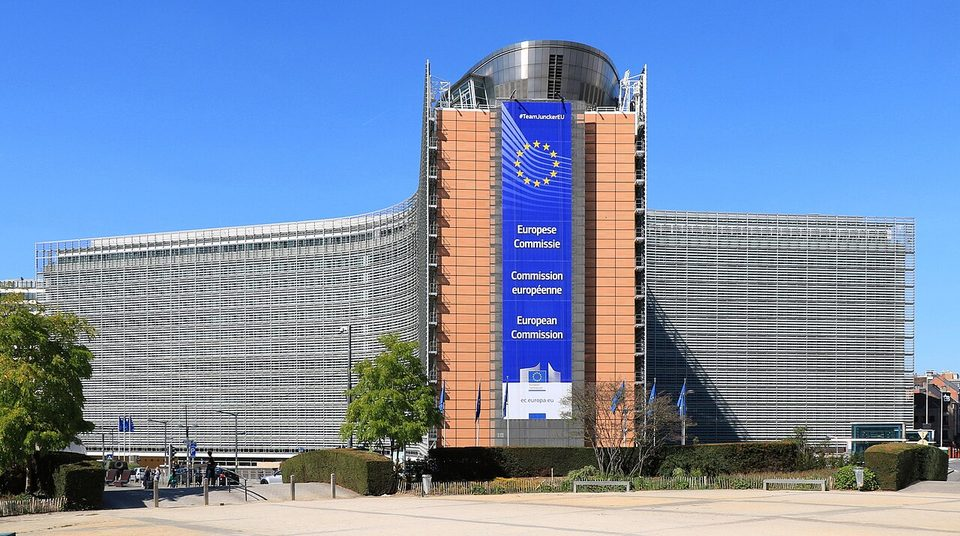
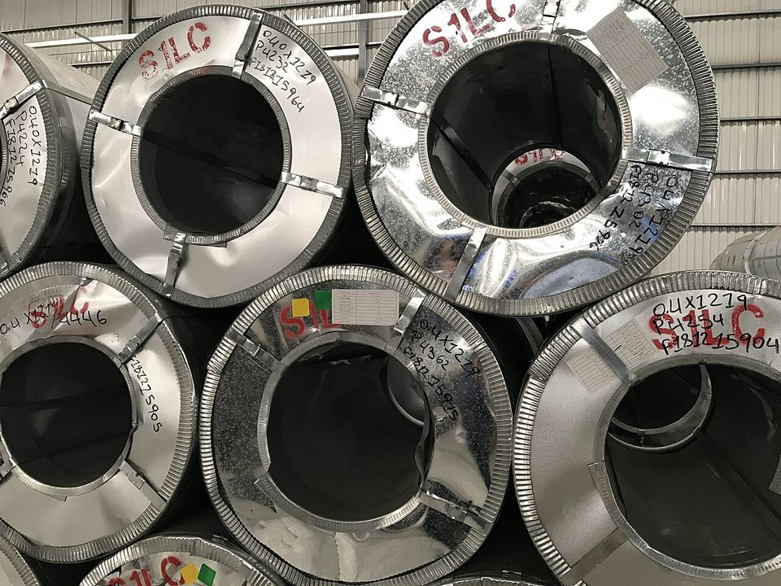
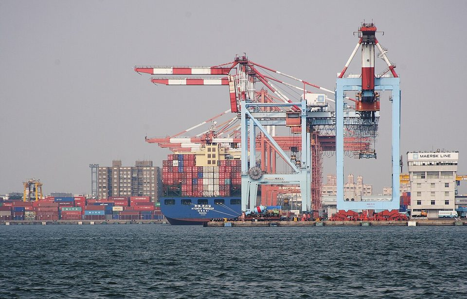

TRADE & POLICY · EU STEEL · 2026.10
歐盟鋼鐵新制：配額砍半、關稅 50%、追查熔鑄地，台灣怎麼應對
鋼鐵潮流工作室 · 發布 2026.10.06

本期重點
2026 年 7 月 1 日，歐盟以新法規 EU 2026/1384 取代到期的鋼鐵防衛措施：免稅配額平均削減 47%，配額外關稅從 25% 加倍到 50%，而且沒有到期日。10 月 1 日起，進口商還必須申報鋼材的「熔鑄地」。台灣的國別配額反而從 48 萬噸增加到 67 萬噸，但品項配額不均與國內分配爭議，才是業者真正的挑戰。
- 常設化：舊制是有期限的 WTO 防衛措施，新制是沒有落日條款的歐盟自主貿易措施，配額加 50% 關稅成為歐洲市場的常態門檻。
- 台灣配額增加：9 類品項、每年 67 萬噸，比舊制最後一期多 39.5%；另可競逐約 60 萬噸先到先得的共用配額。
- 品項不均：冷軋鋼捲去年輸歐約 30 萬噸，新制配額只有 15 萬噸。
- 國內管制：經濟部 7 月 24 日起管制 463 項鋼品輸歐，依 2021–2023 年實績分配配額，分配公平性引發討論。
- 熔鑄地：目前只需申報，但 2028 年前執委會將評估是否改以熔鑄地決定配額歸屬，用進口鋼胚加工的業者風險最高。
關鍵數字
制度怎麼變：從暫時防衛到常設措施
| 項目 | 舊制：鋼鐵防衛措施 | 新制：EU 2026/1384 |
|---|---|---|
| 法律性質 | WTO 防衛協定下的暫時措施，2026 年 6 月 30 日到期 | 歐盟自主貿易措施（歐盟運作條約第 207 條），沒有到期日 |
| 全年免稅配額 | 較高 | 約 1,835 萬噸，平均削減 47%；執委會可在 1,440 萬至 2,220 萬噸之間調整 |
| 配額外關稅 | 25% | 50%，可與反傾銷稅、平衡稅疊加，優惠原產地也不能豁免 |
| 配額結構 | 國別配額加其他國家共用 | 一半給自由貿易協定夥伴、一半開放給其他 WTO 成員；歷史占比 5% 以上給國別配額，其餘先到先得；中國在多數品項不得使用共用配額 |
| 管理週期 | 按季 | 每年 7 月 1 日至隔年 6 月 30 日，按季分配；未用配額只有第一年可滾入下一季 |
法律性質的改變影響最深遠。舊制是有期限的防衛措施，業者可以等它到期；新制沒有落日條款，等於把「配額加 50% 關稅」變成歐洲鋼鐵市場的常態門檻。經濟日報社論估算，配額外 50% 關稅相當於每噸增加約 425 美元成本，超出配額的鋼材獲利空間大幅壓縮，配額本身因此變成有價資產。
台灣拿到什麼：67 萬噸、9 類品項
| 類別 | 品項 |
|---|---|
| 原有 5 類 | 無方向性電磁鋼片、烤漆鋼片、不銹鋼冷軋鋼片、不銹鋼線材、焊接鋼管 |
| 新增 4 類 | 熱軋鋼捲、冷軋鋼捲、塗層鋼片、不銹鋼熱軋鋼片 |
| 未列入 | 馬口鐵、不銹鋼熱軋厚板（出口占比過低） |
行政院經貿談判辦公室經多次協商，讓台灣的國別配額比舊制最後一期增加約 19 萬噸，也新增熱軋、冷軋、塗層鋼片與不銹鋼熱軋四類國別配額。不過貿談辦也表示，歐盟「未充分與台灣協商，且未採納台灣認為合理應獲得的配額」。

總量增加，品項不一定夠用
配額總量增加，不代表每個品項都夠用。以冷軋鋼捲為例，去年輸歐約 30 萬噸，新制國家配額只有約 15 萬噸，等於一半的量必須搶共用配額，或由買賣雙方吞下 50% 關稅。共用配額按季先到先得，若需求集中，可能在季內很快用罄。
國內怎麼管：463 項鋼品輸歐管制
- 兩種配額：「出口實績配額」依 2021–2023 年對歐出口比例分配，可以轉讓；「自由申請配額」給沒有實績或配額不足的業者，不能轉讓。
- 出貨前取得原產地證明：須依獲配配額向鋼鐵公會申請放行前原產地證明書，才能報關出口。
- 超額出口自負關稅：買賣雙方同意負擔超額部分 50% 關稅者，可檢附切結書申請證明後出貨；違反規定者，將扣減下期配額。
- 防止借道：自由貿易港區的鋼品輸歐需專案許可，避免外國鋼材冒充台灣產品佔用國家配額。
分配爭議已經浮現。經濟日報社論指出，約 3 萬噸配額在短時間內由過去輸歐實績有限的貿易業者取得，配額價值可能流向與實際產製脫鉤的業者。社論提出四項建議：公開自由配額比率的形成過程、核配結果與實際使用率；申請者揭露實際產製來源，貿易商須提出與國內製造商的產製或委託關係證明；建立關係企業合併計算機制並設集中度上限；強化未使用額度的回收與重新分配，中長期可評估收費或競價。
熔鑄地：今天只是申報，未來可能改變配額歸屬
「熔鑄地」（melt and pour）指粗鋼或鐵水第一次在煉鋼爐中熔煉、並澆鑄成第一個固體形態（鋼胚、扁胚）的國家，鋼廠材質證明書可以作為證據。
| 時間 | 階段 |
|---|---|
| 2026/10/1 | 進口商必須提出熔鑄地證明（資料蒐集階段） |
| 2027/10/1 起 | 執委會可用蒐集到的資料作為配額分配參考 |
| 2028/6/30 前 | 執委會評估是否改以熔鑄地決定配額歸屬 |
| 2029/6/30 前 | 首次全面檢討制度成效，此後每三年一次 |
目前配額依一般原產地規則認定，用進口鋼胚或熱軋鋼捲在第三國加工，可能被視為加工國產品。歐盟要求申報熔鑄地，是要先掌握「借道加工」的規模。若 2028 年後改以熔鑄地認定，用中國或其他國家鋼胚軋製的產品，可能被歸入原熔鑄國的配額；中國在多數品項又不得使用共用配額，這類產品在歐洲的空間將大幅縮小。

對台灣業者的影響
- 一貫作業鋼廠：受衝擊相對小。 中鋼從煉鐵、煉鋼到軋延都在台灣完成，熔鑄地證明沒有問題，過去的輸歐實績也能轉換為實績配額。依先前報導，中鋼約一成產品外銷歐洲，熱軋、冷軋、塗層鋼片、電磁鋼片都有國別配額，但個別品項配額未必夠用。
- 使用進口原料的加工業者：風險最高。 進口熱軋或鋼胚再軋延、塗鍍的下游業者，現在要證明熔鑄地，2028 年後還可能被改歸原料國配額，宜及早盤點原料來源，必要時改用台灣煉製的鋼材。
- 貿易商與中小廠：配額取得是關鍵。 沒有實績的業者只能爭取自由申請配額或競逐共用配額，國內分配規則是否公平透明，直接影響其接單能力。
- 成本疊加：配額外 50% 關稅之外，還可能疊加反傾銷稅；歐盟碳邊境調整機制（CBAM）2026 年進入正式期，2027 年起進口商須依 2026 年進口量購買憑證。對歐出口的總成本必須三者合併計算。
觀察重點
- 熱軋、冷軋、塗層鋼片等新增品項的國別配額消化速度，以及共用配額的使用情形。
- 經濟部是否回應各界建議，公開核配結果並強化未使用配額的回收機制。
- 歐盟 2027 年後如何使用熔鑄地資料，以及 2028 年的評估結論。
- 台灣碳費能否抵扣歐盟 CBAM 憑證，降低對歐出口的雙重碳成本。
- 執委會是否運用調整權限，在 1,440 萬至 2,220 萬噸之間改變配額總量。
延伸閱讀
資料來源
- EU Steel Overcapacity Regulation 2026/1384（Crowell）
- Unprecedented EU steel regulation targets global overcapacity（CMS）
- 歐盟新鋼鐵保護措施7/1上路 台灣免稅配額增近4成（中央社，2026-06-30）
- 歐盟鋼鐵新制7月上路 台灣爭取67萬噸免稅配額、較現行增近4成（聯合報）
- 歐盟鋼鐵關稅配額新制上路 經部24日起管制463項鋼品出口（中央社，2026-07-16）
- 經濟日報社論／鋼鐵配額若失衡 傷害產業根基（經濟日報，2026-09-27）
- 碳關稅衝擊浮現／歐盟碳稅上路（聯合報）
內容僅供產業資訊參考，不構成投資建議。新聞版權屬原出處所有。